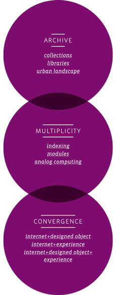

The lines between digital and physical are blurring as the role of technology in our lives expands. As a culture we are becoming increasingly adept at integrating physical environment, cell phones, television, and the internet into one complex narrative of everyday life. The archive is particularly impacted by this process of convergence as our photographs, our newspapers, and even our books are increasingly powered by — and accessed through — networked technology. What implications does this shift from physical archive to digital archive have for both graphic design and the engaged reader?
This body of work struggles with this question through an investigation of three ideas: archive, multiplicity, and convergence.
archive
An archive, according to the Oxford English Dictionary, is defined as: "a place in which public records or other important historic documents are kept." The word came into use in the hundred years following the introduction of movable type printing, as society quickly recognized the need to organize all the knowledge that was being committed to print. As a word it has a peculiar double use: referring not only to the collection itself, but also to the physical structure in which it is contained.
In programming, to archive has a slightly different connotation: "to transfer to a store containing infrequently used files, or to a lower level in the hierarchy of memories, esp. from disc to tape." In other words, to archive something is not only committing information to print somewhere in the system, but is also explicit permission for the item that's been archived to be removed from conscious memory.
I was interested in this implied relationship between archives and memory, and the way we use archives as both individuals and as a culture to store histories for future use. In this section of my thesis, I consider not only how we put things into archives, but how we pull them out again in meaningful ways, and how digital technology impacts this process.
collectionsCollections are the most personal kind of archive, and the ways we create them and organize them have historically been a source of fascination for writers, artists, and designers. They are our way of finding patterns in the everyday world, as well as our way of preserving our personal stories.
In Taking Leave of Nancy, I sought to tell the story of someone using an archive of letters, journals, logs, and personal interviews. In The Box Project, I sought a similar outcome with two separate archives, joining them into one collective narrative using a web-based interface.
libraries
The history of the public library dates back to the fifteenth century, when the advent of movable type created a sudden excess of books with no good way to store them. These original libraries were intended only for their owners, or members of the elite educated class. The modern public library, or lending library, did not surface until several hundred years later when it became more commonplace for middle class citizens to be educated.One of the first such libraries in the United States is located here in Providence, where the Athenaeum still lends to the public in much the same way that it did when it first opened its doors three hundred years ago. The Athenaeum is not alone, however, in its struggle to stay relevant in a world of Wikipedia and Google Books. It has hovered near bankruptcy for decades, and the majority of the books on its shelves are too old or too damaged for general circulation. In Interactive|Obsolete, I used the state of knowledge in the Athenaeum as a starting point for developing a set of cards about obsolete technology.
urban landscape
Historian and professor John Stilgoe begins his book Outside Lies Magic by characterising the urban landscape in this way:"Unlike so many historians entranced by great political, economic and social movements, I emphasize that the built environment is a sort of palimpsest, a document in which one layer of writing has been scraped off, and another one applied. An acute, mindful explorer who holds up the palimpsest to the light sees something of the earlier message, and a careful, confident explorer of the built environment soon sees all sorts of traces of past generations."
Stilgoe's approach to the built environment — as an archive waiting to be mined — is an intriguing one for me. All it takes is a stroll through downtown Providence, and one can see evidence of failed banks, of colonial settlements, of past hurricanes, and future construction layered into the urban landscape.
Some of this layered history is placed intentionally in the public view — cities abound with monuments and plaques designating historical events or famous leaders — while some of it is less noticeably situated — the spray lines that indicate new traffic patterns, the faded lettering giving evidence of a long-shuttered deli, or the empty lot that once held a thriving market.
In then+now, I sought to build tools for people to tap into the city as archive. I built a system for casting modular typography that could be used to extract narrative from the built environment. By choosing what module to cast, and in what material, and where it was placed, a multiplicity of stories could result.
In Can Do, I thought about how the small things we do in public space add up to major impacts when viewed in aggregate. Putting Green Patriot Posters back into public spaces, and allowing people to interact with them, become a sort of analog visualization of collective impact.
Multiplicity
Credit for popularizing the term multiplicity goes to Italo Calvino, who gave a lecture on the subject at Harvard in 1985. The lecture was later included as the fifth component of Six Memos for the Next Millennium, which was posthumously compiled by his wife after he died before he could give the sixth lecture.
The essence of multiplicity is that there are an infinite number of narratives that can be told, and Calvino experimented with formats that allowed him to to tell many of them at the same time. He saw them as encyclopedic, and when done well, almost impossibly complex in their scope. He admired writers who so embraced the multiplicity of their stories that they become overwhelmed with them and failed.
Calvino was interested in a concept he called the hyper-novel, which was almost modular in its conception:
"My aim was to give the essence of what a novel is by providing it in concentrated form, in ten beginnings; each beginning develops in very different ways from a common nucleus, and each acts within a framework that both determines and is determined. ... to sample the potential multiplicity of what may be narrated ..."
The hyper-novel, and the idea of multiplicity itself, has obvious connections to the complexity that we encounter in today's online culture. This portion of my thesis investigates different ways of building a multiplicity of narratives into a designed object.
indexingIn his book Species of Spaces, Georges Perec wrote,
"My problem with classifications is that they don't last; hardly have I finished putting things into an order before that order is obsolete. Like everyone else, I presume, I am sometimes seized by a mania for arranging things. The sheer number of the things needing to be arranged and the near-impossibility of distributing them according to any truly satisfactory criteria mean that I never finally manage it, that the arrangements I end up with are temporary and vague, and hardly any more effective than the original anarchy."
Perec viewed any index or hierarchy as temporary and imperfect. I choose the strategy of including several indexes together as a way of mediating this imperfection, and my investigations of indexing probe the tensions between a top-down approach (taxonomies), and a bottom-up approach (tagging), and ultimately considers ways of combining them.
In Taking Leave of Nancy, I used a single color index to differentiate between the different voices within the book, while the rest of the content was structured along an index of book numbers. In Interactive | Obsolete, a non-hierarchical index (or tagging system) was used to combine five narratives into one set of cards. In Partial Fulfillment — the collective name for my thesis book, web site, and presentation — looked at the tension between the rigid indexing system of the library, and the fluid indexing system of tags. The book is indexed with tags, while the web site contains two concrete indexes of the body of work. The presentation uses elements of both, while providing the only linear narrative through the body of work.
modules
I bring my understanding of modules from my background as a developer, and from my experience with object-oriented programming, or OOP. According to Wikipedia,
"Conceptually, modules represent a separation of concerns, and improve maintainability by enforcing logical boundaries between components."
I see modules as reusable pieces of logic that can be put together to form larger structures. The power of modules lies in their ability to be replicated endlessly, and then customized according to their end use.
Several projects in my thesis were built off of this idea: If You Fall... used a system of stacked boxes that were intended to be picked up and reordered by visitors to the exhibit. Then + Now was a system of not only using the modules, but of creating them, incorporating documentation of how to cast the type in different materials and colors. While each element of Interactive | Obsolete stood on its own as a small narrative window into an obsolete technology, they also functioned modularly as a set of cards. Readers could combine the cards in any number of ways, building larger, more complex narratives.
analog computing
Early forms of computing and encoding are a particular interest of mine. We often speak about technology and complexity as if it is a new phenomenon, when really man has devised amazing solutions to everyday problems for millennia. Consider the abacus, or jacquard looms, punched train tickets or check perforators, the compressed air tube system in turn-of-the-century Paris, punch-card computers, or their ancestor the edge-notched bibliographic systems. The act of physically encoding data onto an object so that it can be manipulated is an old, old idea.I spent considerable time during my thesis investigations looking at these obsolete technologies in a new light, as ways of building a multiplicity of narratives into a designed object. I used edge-notched bibliographic systems in Interactive | Obsolete , and was inspired by punched train tickets in designing the mapping system within In partial fulfillment.
Convergence
In 1995, Nicholas Negroponte wrote the best-selling book Being Digital, in which he used the word convergence as a part of his argument that printed media like newspapers and books would eventually be completely digital. In it, he famously declared,
"Move bits, not atoms."
While Negroponte's notions of a unified digital media have fallen out of favor with academics, it has been picked up again and reinterpreted by Henry Jenkins with a different spin.
Jenkins considers convergence to be a process, a constant combining and recombining of different forms of media in specific times and places, without the expectation of eventual unification. Jenkins writes,
"[i]f the digital revolution paradigm presumed that new media would displace old media, the emerging convergence paradigm assumes that old and new media will interact in ever more complex ways."
Jenkins' writing is often limited to his own interests in commercial entertainment, such as films, video games, and online fan culture. But his idea of increased complexity between forms of media rings true for me.
This thesis uses the term convergence to investigate the relationship between three specific forms: web sites, designed objects, and physical experience.
Its important to reiterate that convergence is not static. Convergence is a process, and the relationships between these three forms are constantly evolving. It is also not always a perfect union of three: I began my experiments with convergent pairs — web site and designed object, designed object and physical experience, etc — before thinking about how all three could exist together.
internet + designed objectIn An RSS Experiment, I investigated how rss could be used as a delivery mechanism for statistical information. Turning this relationship around, I also questioned how a raw data format such as rss would behave in the form of an accordion book.
internet + experience
The Box Project began with two archives in two cities: Dallas and Providence. Each day for two weeks, one item was removed from each box and photographed. An interface completed the convergence of a web site and the physical act of unpacking a box, showing the photographs as they were posted each day, and highlighting the collective narrative that emerged over the course of two weeks.
Long-winded is an investigation of how the physical landscape relates to the digital landscape. Combining live weather data and my thesis writing as a test case, Long-winded is an interface for a blog that changes formally when the wind gusts outside. In cases of particularly strong wind, the content of the blog is obscured completely.
internet + designed object + experience
Both Can Do and teamECO were early forays into designing participatory systems, taking users through web sites, designed objects, and physical experience in a kind of loop, using the energy generated in the system as a tool to gather information or inspire positive action.Jenkins writing was once again an influence, particularly when considering convergence of all three of my forms at the same time. He uses a phrase called transmedia storytelling, describing it in Convergence Culture:
"Transmedia storytelling is the art of world-making."
in partial fulfillment was the last project completed for this thesis, and I approached the challenge from the perspective of making a world: I considered the convergence of web site, designed object, and physical experience less as a tool, and more as a way of giving many overlapping lenses into the same set of content.